Bocetos y navegación por roles - BISTRO FDI
Todos los bocetos se plantean para uso en ordenador. Se muestra qué ve cada rol (Cliente, Camarero, Cocinero, Gerente) y cómo navega entre pantallas.
Cliente
Pantalla 1: Login / Registro
Rol: Cliente (y resto de roles).
Funcionalidad: identificación obligatoria; registro de nuevos clientes.
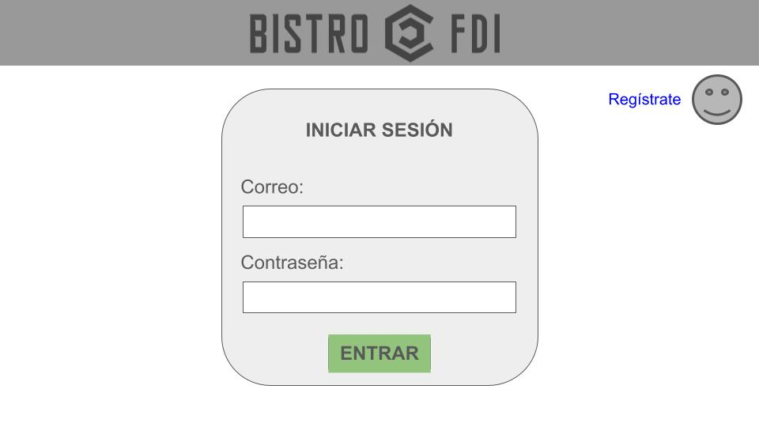
Navegación: Entrar → Pantalla 2.
Pantalla 2: Elegir tipo de pedido
Rol: Cliente.
Funcionalidad: seleccionar pedido Local o Llevar.
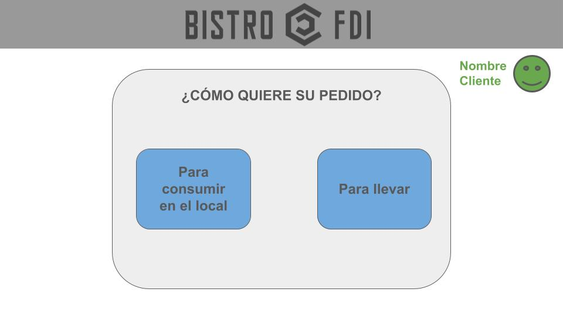
Navegación: Local/Llevar → Pantalla 3.
Pantalla 3: Categorías + listado de productos
Rol: Cliente.
Funcionalidad: navegar por categorías y ver productos disponibles.
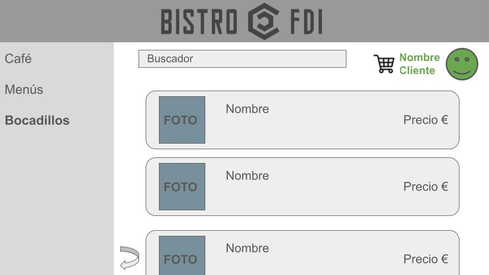
- Click en categoría → filtra el listado
- Click en producto → Pantalla 4
Pantalla 4: Detalle de producto
Rol: Cliente.
Funcionalidad: ver detalle; elegir cantidad; añadir al carrito.
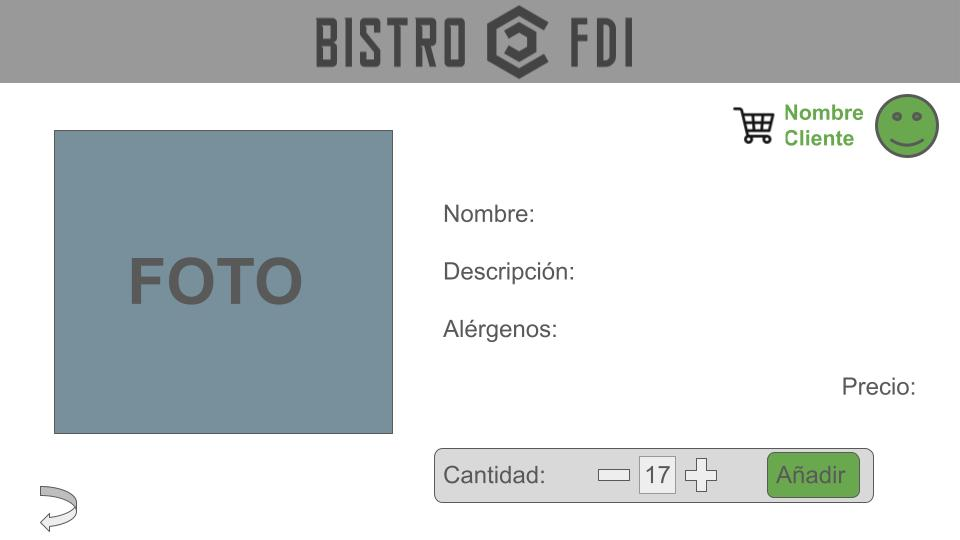
Navegación: “Añadir” → Carrito (Pantalla 5) o volver al listado.
Pantalla 5: Carrito (pedido en creación)
Rol: Cliente.
Funcionalidad: modificar unidades; eliminar productos del carrito; confirmar o cancelar.
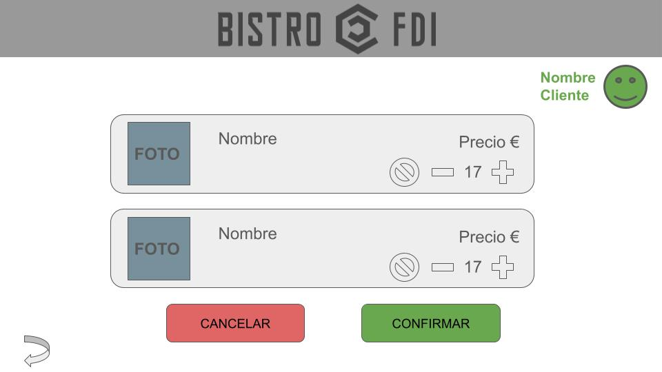
- Confirmar → Pago (Pantalla 6)
- Cancelar → vuelve al inicio / tipo de pedido (según diseño)
Pantalla 6: Pago
Rol: Cliente.
Funcionalidad: pagar con tarjeta (simulado con validaciones) o solicitar pagar al camarero.
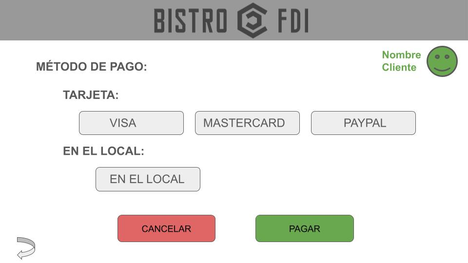
Navegación: Pagar → Confirmación (Pantalla 7).
Pantalla 7: Confirmación
Rol: Cliente.
Funcionalidad: mostrar nº de pedido, estado y botón “volver al inicio”.
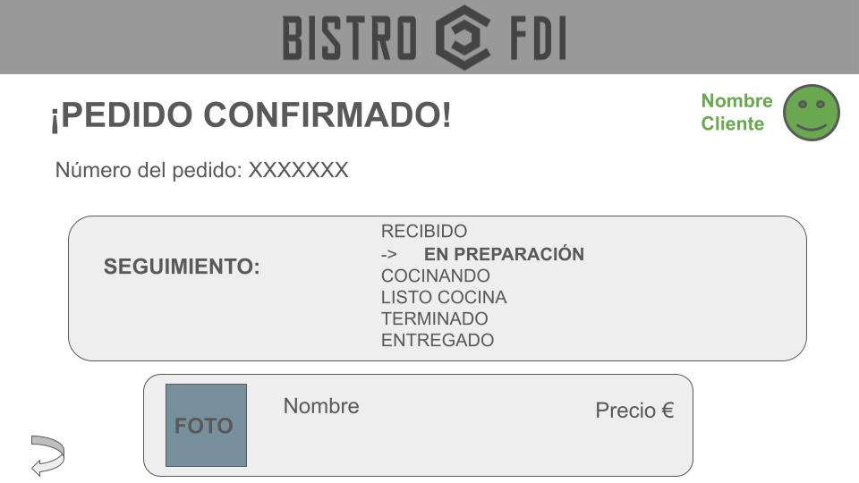
Navegación: “Volver al inicio” → Pantalla 1 (reinicio del flujo).
Personal
Pantalla 8: Camarero - Pedidos “Recibido”
Rol: Camarero.
Funcionalidad: cobrar pedidos cuando el cliente elige pagar al camarero; confirmar pago → “En preparación”.
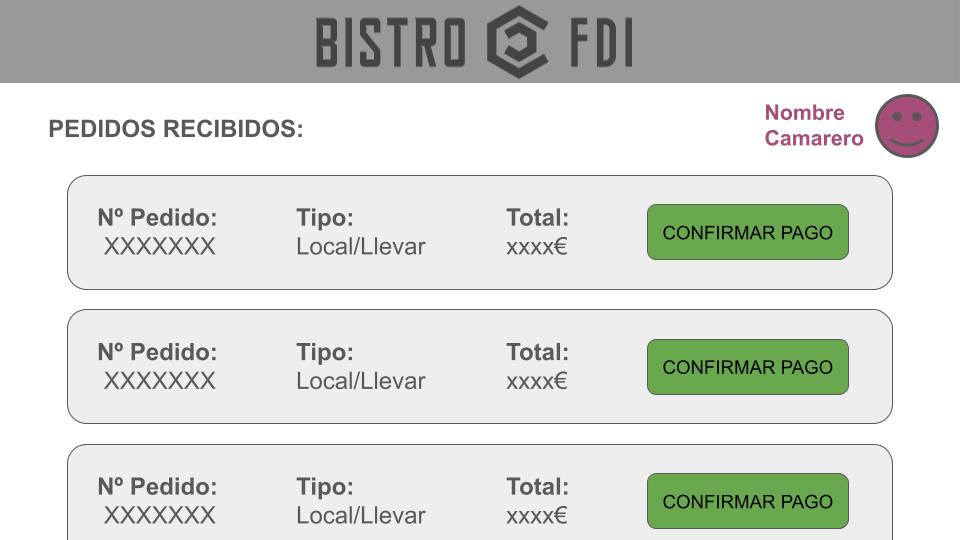
Pantalla 9: Cocinero - Pedidos “En preparación”
Rol: Cocinero.
Funcionalidad: quedarse con un pedido; al asignarlo pasa a “Cocinando”.

Pantalla 10: Cocinero - Detalle de pedido
Rol: Cocinero.
Funcionalidad: marcar productos preparados y finalizar → “Listo cocina”.
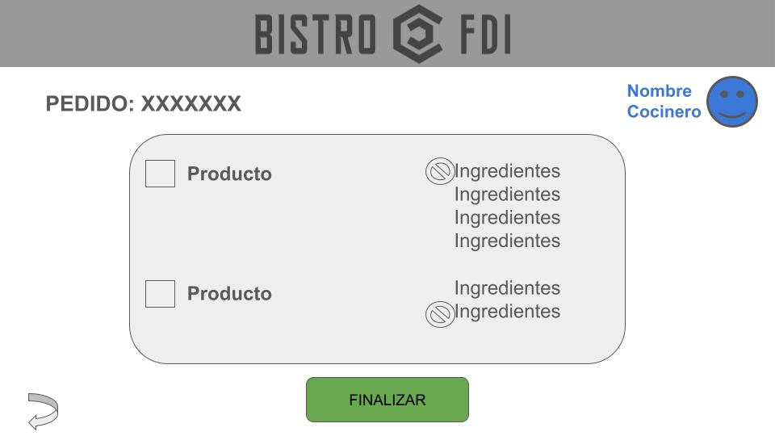
Pantalla 11: Camarero - “Listo cocina / Terminado / Entregado”
Rol: Camarero.
Funcionalidad: completar lo que falta (p.ej. bebidas / empaquetado para llevar), pasar a “Terminado” y confirmar entrega → “Entregado”.
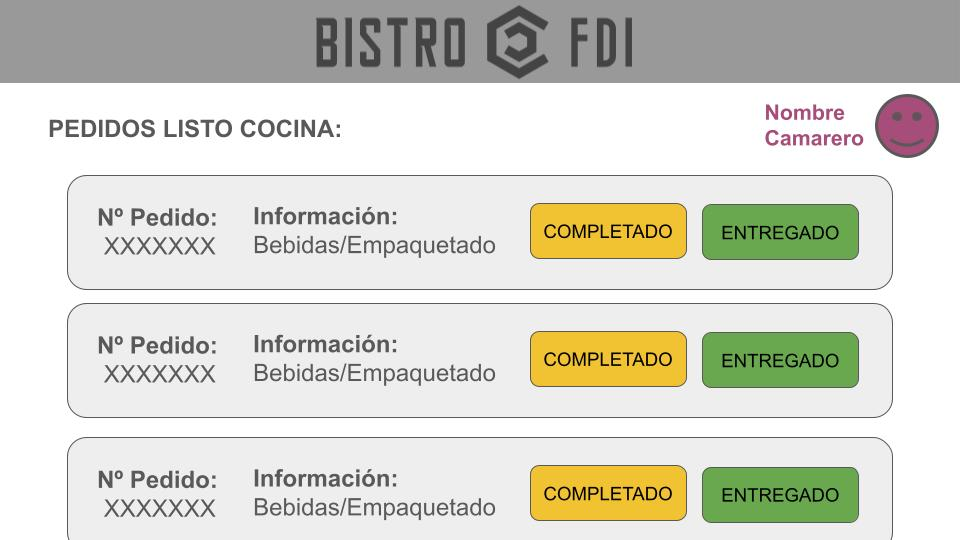
Gerente
Pantalla 12: Gerente - Gestión de productos y categorías (CRUD)
Rol: Gerente.
Funcionalidad: listar/crear/editar/retirar (ofertado) productos; selector de categoría; mostrar precio final con IVA.
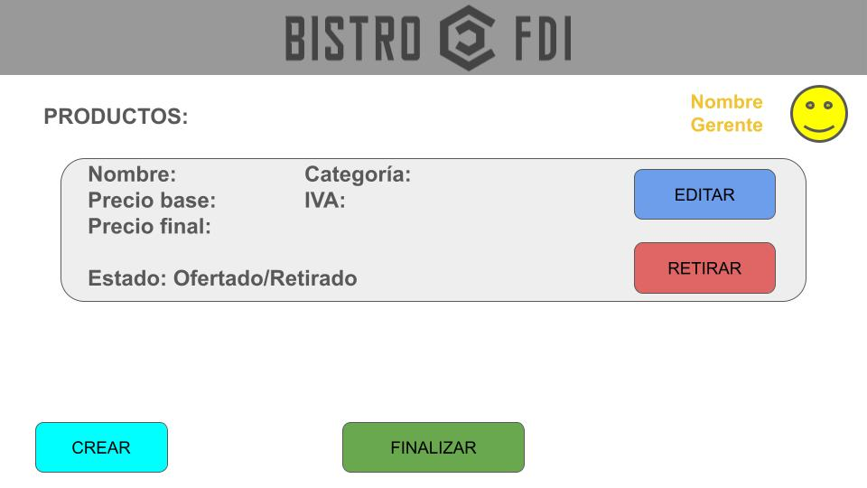
Recorridos principales (paso a paso)
Recorrido Cliente (compra completa)
- Login/Registro
- Elegir tipo de pedido (Local/Llevar)
- Navegar por categorías y seleccionar productos
- Detalle producto → elegir cantidad → añadir al carrito
- Carrito → modificar unidades / eliminar → confirmar
- Pago → tarjeta (simulada) o pagar al camarero
- Confirmación → volver al inicio
Recorrido Personal (cambio de estados)
- Camarero confirma pago: “Recibido” → “En preparación”
- Cocinero se asigna: “En preparación” → “Cocinando”
- Cocinero finaliza: “Cocinando” → “Listo cocina”
- Camarero completa y entrega: “Listo cocina” → “Terminado” → “Entregado”